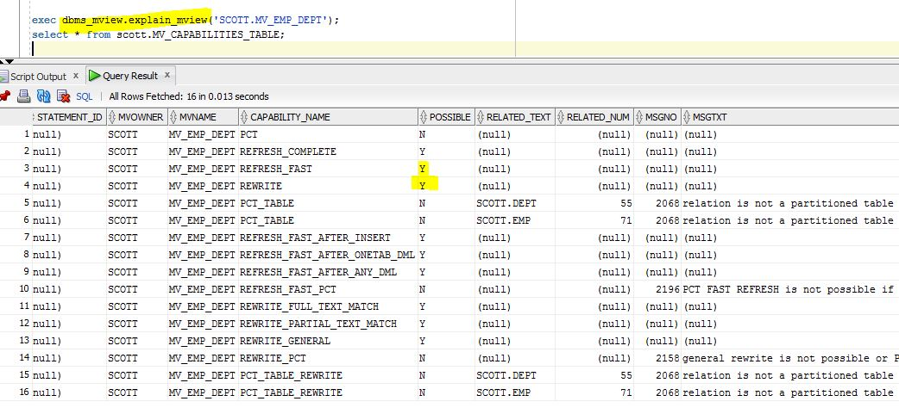

There are some rules to be able to fast refresh a materialized view (which means, refresh it so that it is not stale, and without running the whole query). Documentation is in the Datawarehouse Guide, but we can use Enterprise Manager to get quickly to our goal.
Let’s see which tables we have:
and create materialized views:
I want to materialize the following join and group by:
select deptno,dname,count(*),sum(sal) from scott.dept join scott.emp using (deptno) group by deptno,dnamewhen entering the query you can run ‘explain':
here is what is displayed by the explain
For fast refresh we need materialized view log, so let’s create them:
I keep the default: primary key and choose the other column I will use in my materialized view:
I do it for both tables, here is what ‘show sql’ displays:
CREATE MATERIALIZED VIEW LOG ON SCOTT.DEPT NOCACHE WITH PRIMARY KEY ("DNAME") EXCLUDING NEW VALUES
CREATE MATERIALIZED VIEW LOG ON SCOTT.EMP NOCACHE WITH PRIMARY KEY ("DEPTNO", "SAL") EXCLUDING NEW VALUES
Note that there is no comma between the with clause and the column list. If you put one, you can have strange behaviour.
so here they are:
and let’s explain our mview again:
In order to support fast refresh for all kind of DML, I need to add the following ‘with’ clause:
ALTER MATERIALIZED VIEW LOG ON DEPT ADD SEQUENCE, ROWID INCLUDING NEW VALUES; ALTER MATERIALIZED VIEW LOG ON EMP ADD SEQUENCE, ROWID INCLUDING NEW VALUES;You can do it from the GUI, but I don’t want to navigate though screens again.
So the result is that my materialized view supports fast refresh. But there was something else:
In order to maintain the SUM() and because the SAL column may be null, we need to keep a count of non null values.
select deptno,dname,count(*),sum(sal),count(sal) from scott.dept join scott.emp using (deptno) group by deptno,dname
Now everything is ok:
I can use the ‘get recommendation’ to see that there’s nothing else to do:
Here is the SQL generated:
CREATE MATERIALIZED VIEW "SCOTT"."MV_EMP_DEPT" USING INDEX REFRESH FORCE ON DEMAND ENABLE QUERY REWRITE AS select deptno,dname,count(*),sum(sal),count(sal) from scott.dept join scott.emp using (deptno) group by deptno,dname BEGIN DBMS_STATS.GATHER_TABLE_STATS(ownname =>'SCOTT', tabname => 'MV_EMP_DEPT'); END;
If you don’t have Enterprise Manager, you can do the same manually.
First create the table to store the result:
$ ( cd $ORACLE_HOME/rdbms/admin ; ls *xmv*sql; ) utlxmv.sql(yes I don’t have to remember the name, I just remember ‘xmv’ for explain mview and ‘xrw’ for explain rewrite)
$ sqlplus scott/tiger @ ?/rdbms/admin/utlxmv.sql SQL*Plus: Release 11.2.0.3.0 Production on Thu Dec 17 15:09:36 2015 Copyright (c) 1982, 2011, Oracle. All rights reserved. Connected to: Oracle Database 11g Enterprise Edition Release 11.2.0.3.0 - 64bit Production With the Partitioning, OLAP, Data Mining and Real Application Testing options Table created. SQL> l 1 CREATE TABLE MV_CAPABILITIES_TABLE ...And here is the result after running
exec dbms_mview.explain_mview('SCOTT.MV_EMP_DEPT');
select * from scott.MV_CAPABILITIES_TABLE;
on SQL Developer

That was about refresh. The rewrite capabilities can be explained in a similar way, but that was in a previous blog post.
{kind=link}
{kind=link}
{kind=link}
{kind=link}
{kind=link}
{kind=link}
{kind=link}
{kind=link}
{kind=link}
{kind=link}
{kind=link}
{kind=link}